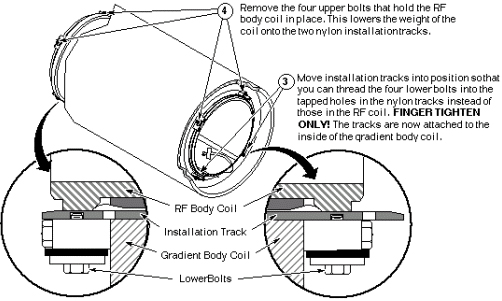
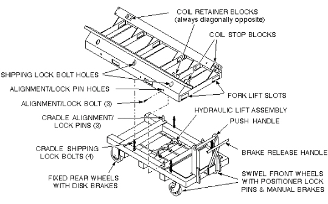
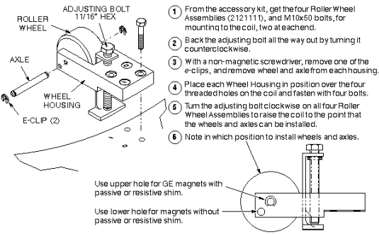

Operating Documentation
Direction 5440000, Rev# 5
Signa HDxt Service Methods
Module Version 2.0, Version Date 10/18/07
Operating Documentation |
| Required Persons | Preliminary Reqs | Procedure | Finalization |
|---|---|---|---|
| 4 Minimum | Not Applicable | Not Applicable | Not Applicable |
The RF body coil is now completely disconnected. At this point, you may follow either of two procedures:
If the RF Body Coil is operational, it must be removed for later installation in the replacement gradient coil. In this case, go to Step in Section 4.1 below,
OR
If the RF Body Coil is to be replaced along with the gradient coil, go on to Replacement Coil Installation.
| NOTE: | Number of rubber pads required - Save the rubber pads for use under replacement coil. GE magnets having resistive shim coils require two 6.5-mm-thick pads (2126201), one at each end of bore. Magnets having no resistive shim coils require the same two pads, PLUS three 9.5-mm-thick pads (2135234) at each end. Oxford magnets require two 9.5-mm-thick pads under each end. |
| Item | Qty | Effectivity | Part# | Manufacturer | |
|---|---|---|---|---|---|
| Epoxy-filled Gradient Coil cart (2134810), cradle (2134810-2), and accessory kit (2134810-4). | 1 | - | 2144093 | - | |
| IF NEEDED to unload Coils from truck: Class 1 electric rider lift truck, 4-wheel, rated at 6000 lbs (in case the coil, cart, and cradle must all be lifted together; with forks a minimum of 56 inches long; with side shifter for easy width adjustment and lateral movement of forks. | 1 | - | n/a | - | |
| Non-magnetic tool kit | 1 | - | 46-320273G1, G2, G3, or G4 | - | |
| Nylon Tracks (P/N), which are 1/4-inch thick, one inch wide, and 60 inches long. In each end of the track are two holes; one is smooth and goes all the way through, and the other is threaded and goes partially through. Two tracks come with each replacement Epoxy-filled Combined Gradient Coil. | 2 | - | - | - | |
| 12-inch length of 1/2-inch I.D. hose | 1 | - | - | - | |
| 2 hose clamps for 1-inch O.D. hose | 1 | - | - | - | |
| 4-inch-long piece of copper tubing, 1/2-inch O.D. | 1 | - | - | - | |
| Roll of paper toweling | 1 | - | - | - | |
| Pair of latex gloves | (optional) | - | - | - | |
| Non-magnetic torpedo level or similar | 1 | - | - | - | |
| ||||
| PERSONAL INJURY POSSIBILITY! | ||||
| WHEN REMOVING OR REPLACING THE RUBBER PADS THAT ARE LOCATED BENEATH THE GradientCOIL, DO SO WITHOUT PUTTING YOUR FINGERS BETWEEN THE COIL AND THE MAGNET BORE. | ||||
| SERIOUS INJURY CAN OCCUR IF THE COIL SHOULD SUDDENLY SHIFT POSITION WITHIN THE BORE. |
| ||||
| Personal injury/equipment damage possibility. | ||||
| The combination of the coil, cradle, and cart weighs almost 3300 pounds (~1230 kg). | ||||
| To avoid personal injury and/or equipment damage, and to maintain complete control over this amount of weight, a minimum of four people must be used to move the combination. |
| ||||
| POSSIBLE PERSONAL INJURY AND/OR EQUIPMENT DAMAGE! | ||||
| NOT HAVING THE CRADLE ANCHORED TO THE CART COULD CAUSE THE CRADLE TO TIP WHEN THE COIL MOVES ONTO IT. | ||||
| THE THREE CRADLE ALIGNMENT/LOCK BOLTS MUST BE IN PLACE BEFORE THE COIL IS ROLLED ONTO THE CART. |
| Condition | Reference | Effectivity |
|---|---|---|
Gradient body coils in transportables and relocatables must be replaced via the overhead side door, but the floor must be temporarily reinforced with 3/4-inch plywood; only the floor immediately below the magnet is strong enough to support the combined weight of the coil/cradle/cart combination. The patient lift in transportables also cannot support that combination, so a lift truck must be used to place it inside the side door. | - | - |
RF power and DD Board Bias cables shall have already been disconnected in previous steps; ends should be taped to inside of coil.
| NOTE: | Handling the RF body coil - While it is possible for two people to move an RF body coil with reasonable ease, use three people for this procedure. |
This procedure requires three people. It also requires two nylon tracks (P/N), which are 1/4-inch thick, one inch wide, and 60 inches long. In each end of the track are two holes; one is smooth and goes all the way through, and the other is threaded and goes partially through. Two tracks come with each replacement Epoxy-filled Combined Gradient Coil.
The three parts steps below show all of the necessary steps for removing the RF body coil.
Placing the RF Body Coil Installation Tracks
Illustration 1: PLACING THE RF BODY COIL INSTALLATION TRACKS

Attaching the RF Body Coil Installation Tracks
Illustration 2: ATTACHING THE RF BODY COIL INSTALLATION TRACKS

Removing the RF Body Coil From the Gradient Coil
Illustration 3: REMOVING THE RF BODY COIL FROM THE GRADIENT COIL

| NOTE: | Making more room for the tracks - If the fit between the RF Body Coil and the Gradient Coil seems tight, consider turning the four upper bolts clockwise a few turns to raise the RF Body Coil slightly, allowing a bit more room to slide the tracks through. |
Go on toUsing the Coil Cradle and Cart - Using the Coil Cradle and Cart.
The Epoxy-filled Gradient Coil cradle and cart are used to install
and remove the Epoxy-filled Gradient Coil (with or without the RF
body coil) at the magnet. The components are called out inIllustration 4 look them over carefully. It may be helpful, also, to refer to
Service Note 60880  , for more information on using the Gradient Coil Cart.
, for more information on using the Gradient Coil Cart.
Illustration 4: GRADIENT COIL CRADLE & CART NOMENCLATURE

| ||||
| Personal injury/equipment damage possibility. | ||||
| The combination of the coil, cradle, and cart weighs almost 3300 pounds (~1230 kg). | ||||
| To avoid personal injury and/or equipment damage, and to maintain complete control over this amount of weight, a minimum of four people must be used to move the combination. |
| ||||
| Possible personal injury and equipment damage! | ||||
| Not having the cradle anchored to the cart could cause the coil/cradle to tip. | ||||
| The three cradle alignment/lock bolts MUST be in place before the coil is rolled onto the cart. |
| ||||
| EQUIPMENT DAMAGE HAZARD! DO NOT USE THE PATIENT TABLE TO SUPPORT OR TRANSPORT THE GRADIENT COIL. THE PATIENT TABLE IS RATED AT 300 LBS (136 KG). THE GRADIENT COIL WEIGHS APPROXIMATELY 3.5 TIMES THE RATING OF THE PATIENT TABLE. USING THE TABLE TO SUPPORT THE GRADIENT COIL IS LIKELY TO DAMAGE IT STRUCTURALLY. | ||||
Moving the almost 3300 pounds of the combined coil, cradle, and cart requires a minimum of four people; therefore, follow the steps below to prevent damage to the equipment, and for the safety of those using that equipment.
The next steps that prepare the empty cradle and cart to receive the failed gradient coil.
Illustration 5: PREPARE THE CART AND CRADLE

SeeIllustration 6 for the steps to assembling the Roller Wheel Assemblies, and mounting them on the failed coil.
Illustration 6: MOUNTING THE ROLLER WHEEL ASSEMBLIES

| NOTE: | Roller wheel and axle positioning - In most cases, the axle/wheel combination is positioned in the higher of the two holes in the wheel housing (higher being relative to a side view of the housing). The lower hole is used for placement of body coils in magnets that have no resistive shim coils (This magnet bore is larger in diameter; therefore, the body coil must sit higher in the bore). |
| ||||
| PERSONAL INJURY POSSIBILITY! | ||||
| WHEN REMOVING OR REPLACING THE RUBBER PADS THAT ARE LOCATED BENEATH THE Gradient COIL, DO SO WITHOUT PUTTING YOUR FINGERS BETWEEN THE COIL AND THE MAGNET BORE. | ||||
| SERIOUS INJURY CAN OCCUR IF THE COIL SHOULD SUDDENLY SHIFT POSITION WITHIN THE BORE. |
Illustration 7 shows how to remove the rubber pads.
Illustration 7: REMOVING THE RUBBER PADS

| NOTE: | Number of rubber pads required - Save the rubber pads for use under replacement coil. GE magnets having resistive shim coils require two 6.5-mm-thick pads (2126201), one at each end of bore. Magnets having no resistive shim coils require the same two pads, PLUS three 9.5-mm-thick pads (2135234) at each end. Oxford magnets require two 9.5-mm-thick pads under each end. |
| ||||
| POSSIBLE PERSONAL INJURY AND/OR EQUIPMENT DAMAGE! | ||||
| NOT HAVING THE CRADLE ANCHORED TO THE CART COULD CAUSE THE CRADLE TO TIP WHEN THE COIL MOVES ONTO IT. | ||||
| THE THREE CRADLE ALIGNMENT/LOCK BOLTS MUST BE IN PLACE BEFORE THE COIL IS ROLLED ONTO THE CART. |
| ||||
| Equipment damage possibility. Early carts had left-hand threads
on the Lift Assembly Height Adjuster, i.e., clockwise rotation lowered
the assembly, and counterclockwise rotation raised it. Gradually,
these carts are being modified for right-hand threads. Be sure to
check the cart that you are about to use. Damage to the mechanism
can occur if the bolt is turned the wrong way with the full weight
of a coil and cradle on it. (also see | ||||
See the two-partIllustration 8 for steps necessary for placing the empty cradle/cart at the magnet, and loading the failed coil on it.
Illustration 8: POSITIONING THE EMPTY CRADLE AND CART

Using four people, two at the front of the magnet (one on each side) and two at the rear of the magnet (one person on each side). Have the people at the front of the magnet push on the coil, while the two people at the rear roll the gradient coil on to the cradle.
| ||||
| Make sure the shipping bracket holes for the gradient coil line up with the holes on the cradle cart before removing the rollers. The shipping brackets MUST be installed prior to returning the coil. See Illustration 9. | ||||
Preparing the Failed Coil for Return Shipment.
Illustration 9: FAILED COIL READY FOR RETURN SHIPMENT

No finalization steps.